Trig, hyperbolic and inverse functions, waves, polar coordinates & factorials¶
## import all python add-ons etc that will be needed later on
%matplotlib inline
import numpy as np
import matplotlib.pyplot as plt
from sympy import *
init_printing() # allows printing of SymPy results in typeset maths format
plt.rcParams.update({'font.size': 16}) # set font size for plots
5.1 Trig functions¶
The common trigonometric functions, sine and cosine, are circular functions because their values repeat as \(x\) is increased. Together with the tangent, they are defined as ratios of the sides of a right-angled triangle and are illustrated in Figure 9.
and
The cosine is the projection of the hypotenuse onto the x-axis, and the sine the projection onto the y- or vertical axis. The tangent is the gradient of the hypotenuse.
There are very many relationships between the trig functions; some of the most commonly met are, for angles \(x\) and \(y\) are shown below
The sine, cosine, and tangent functions can also be described as series expansions, see Chapter 5, and as complex exponential functions. The equations are given here but described in detail in Chapter 2, which describes complex numbers.
The word tangent derives from the Latin tangere, which means to touch, and this is also the usage when the tangent is used to define the gradient of a curve at a given point, Figure 10. If the curve is a circle, the tangent is perpendicular to the radius.
Although hand-held calculators usually use degrees to calculate trigonometric functions, this disguises the fact that these functions require the angle to be in radians. A radian is the angle subtended at the centre of a circle by travelling a distance around the circumference that is equal to its radius, thus a complete rotation of \(360^\text{o} \equiv 2\pi\) radians and 1 radian is approximately \(57.5^{\text{o}}\). Radians are not always included as units; the exception is in the study of NMR where the magnetogyric ratio \(\gamma\), which is the constant that relates the magnetic dipole to the magnetic field, is always quoted in \(\mathrm{rad\, T^{-1} s^{-1}}\), the T here representing the unit Tesla. In spectroscopy generally, frequencies are usually quoted either as \(\mathrm{s^{-1}}\), with the symbol \(\upsilon\), or as angular frequencies, \(\omega\) in rad s\(^{-1}\). These are related as \(2\pi \upsilon = \omega\).
Figure 9 Trigonometric relationships in a right-angled triangle and relationships to the x- and y-axes.
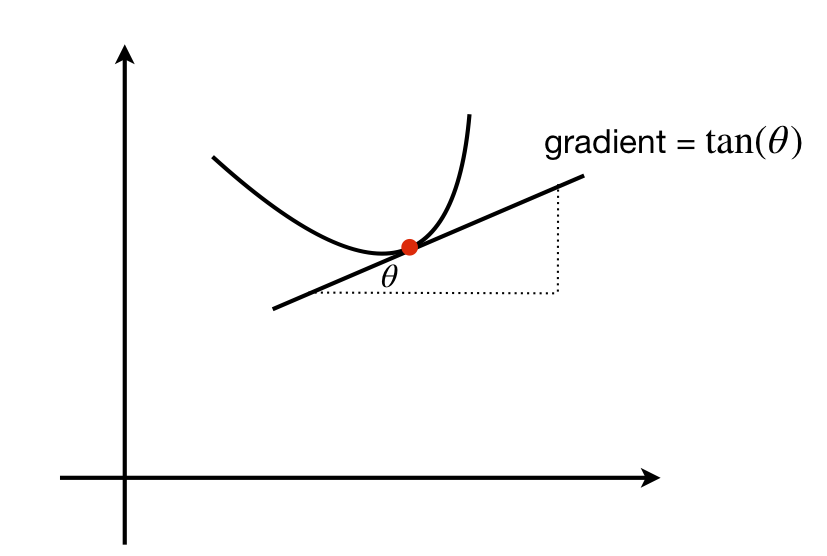
Figure 10 The tangent touches the curve at a point and defines the gradient at that point.
5.2 Waves¶
In electromagnetic radiation, such as X-rays or radio waves and, more familiarly, visible light, the periodic displacement of the electric and magnetic fields is described by a sine or cosine function. Similarly, sine and cosine describe the periodic displacement of molecules as a sound wave travels through a gas, liquid, or solid, and describe a molecule’s internal vibrational normal modes. Any motion described by a single sine or cosine is called simple harmonic motion (SHM), for example, the motion of a pendulum. A spring is often called a harmonic oscillator and this term is also used to describe molecular vibrations. Mathematically, waves form the basis of the Fourier transforms and Fourier series method described in Chapter 9.
A sine wave is defined by its wavelength, amplitude, and phase. The amplitude is its maximum vertical displacement from zero. The wavelength is one full or two half periods and is the distance from one node to the next but one. A node is any of the points where the wave has zero amplitude.
In a longitudinal wave, such as a sound wave, the gas molecules are made to move about their equilibrium position in simple harmonic motion by the disturbance generating the sound. This simple harmonic motion occurs along the direction that the wave travels. The wave moves through the gas because molecules interact with one another causing regions of increased pressure and rarefaction. Even though each molecule only moves about its equilibrium position as it does so, it influences its neighbour and the wave moves. A Mexican Wave at a football or cricket match is an example of how the wave moves but each particle (a person in this case) does not move from equilibrium. The speed of the wave is governed by how well one molecule (person) interacts with its neighbour and therefore depends on the properties of the medium. In a gas, the speed is \(v = \sqrt{\gamma RT/M}\) where \(\gamma\) is the ratio of heat capacities at constant pressure and volume which is \(1+2/5\) for an ideal diatomic gas and \(5/3\) for an ideal atomic gas such as argon. A helical ‘slinky’ spring toy can be seen to exhibit longitudinal waves.
In transverse waves, such as a water wave, electromagnetic radiation, or a taut wire in a guitar or violin, the displacement of the particles about equilibrium is at right angles to the direction in which the wave is travelling. In a taut wire the wave’s velocity is \(v = \sqrt{T/\mu}\) where \(T\) is the tension ( the force in Newtons ) and \(\mu\) the mass per unit length. The units are \(\displaystyle \left(\frac{N}{(kg/m)}\right)^{1/2}\equiv \left(\frac{kg m/s^2}{(kg/m)}\right)^{1/2} = \frac{m}{s}\).
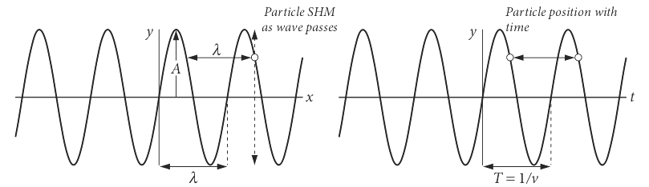
Figure 11 Left: The wave on the left is \(y = \sin(2\pi x/\lambda)\). The particle (circle) remains at a fixed \(x\) but is displaced and follows SHM motion as the wave passes. After one period, it is at the same displacement. Right: The particle’s motion is shown with time; the wave is \(y = \sin(2\pi \upsilon t)\). After one or any whole number of periods the particle (circle) is again at the same displacement \(y\).
If a wave is represented as amplitude vs. distance \(x\), then a particle remains at one \(x\) value and performs simple harmonic or sinusoidal motion at that position as time progresses. Its displacement amplitude is
The term \(k\) is sometimes called the wavevector and is \(k = 2\pi/\lambda\) where \(\lambda\) is the wavelength. The phase is \(\varphi\) (radians) which might be zero, is a constant displacement of the wave. At zero \(x\) the amplitude is \(A\sin(\varphi)\). Sine and cosine always have a fixed phase difference between them of \(\pi /2\) or \(90^\text{o}\), thus a sine wave is changed into a cosine, and vice versa by a \(\pi/2\) phase change.
If the plot is one of amplitude vs time then the wave represents how the particle moves in time at a given position. The wavelength is now the period \(T\) of the motion and \(T = 1/\upsilon\) where \(\upsilon\) is the frequency in \(\mathrm{s^{-1}}\). The angular frequency is \(\omega = 2\pi\upsilon\), in radian \(\mathrm{s^{-1}}\), hence the following equations are equivalent
The velocity of the wave \(v\) is the product of frequency and wavelength; \(v = \upsilon\lambda= \omega/k\). The general equation for a travelling wave, either transverse or longitudinal, is
In this equation the sign \(-kx\) means that the wave is travelling to the right, which is positive \(x\). If the term were written \(+kx\), then the wave would be travelling to the left. Depending upon whether \(x\) or \(t\) is plotted the similar but different plots in Figure 11 are produced. On the left the displacement \(x\) is plotted and therefore as time progresses the particle moves up and down at fixed \(x\). On the right the displacement vs time at a fixed \(x\) is plotted.
The phase \(\varphi\) (figure 12) displaces the wave but does not change its frequency or wavelength. The dashed curve, Figure 12 has \(\varphi = +2/3\) radians compared the solid curve where the phase is zero. Note that a positive phase displaces the curve to the left compared to zero phase.
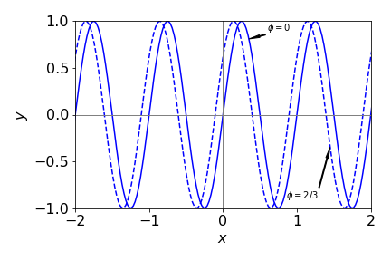
Figure 12 Comparison of \(\sin(2\pi\upsilon t + 2/3)\) with \(\upsilon = 1\) (dashed line) compared to the sine wave with zero phase.
When two waves are added they can reinforce or destroy one another depending on their phase. Clearly, when they are in phase, the phase being zero or integer multiples of \(2\pi\), the waves add and a double-sized wave is produced. When \(180^\text{o}\) or integer multiples of \(\pi\) out of phase destructive interference occurs.
If the waves are of different frequency then they become out of step with one another, as shown in Figure 13. However, the two waves will periodically have places where both waves have zero amplitude. The effect is called beating and in a sound wave this is heard as a repeating hum, hence ‘beats’, when the second sound wave is turned on. The beat frequency is the difference in frequency of the two individual waves and is twice the lowest frequency of the combined wave. The combined wave has frequencies that are half the sum and half difference of the two fundamental waves. Figure 13 shows this effect on waves with \(\upsilon\) = 5 and 5.5 Hz. The beating is clear when the waves are added together. The dashed line shows the sine wave at the difference frequency, 0.5 Hz. The sum wave is
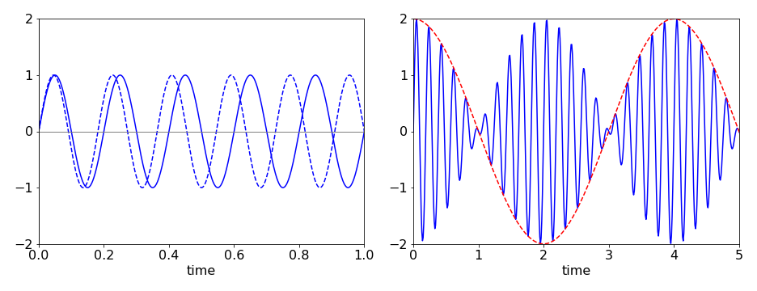
Figure 13 Left: the two travelling waves of frequency \(\upsilon = 5\) and \(5.5\) quickly become out of step with one another. Right: the sum of the waves shows beating with a beat frequency of 0.5 Hz (red dashed line) and a higher frequency at the sum of the frequencies. (Note that different abscissa are used).
5.3 Phase and group velocity¶
A wave is defined with an angular frequency \(\omega = 2\pi\nu\) and wavevector
and has the general form of equation (16). The phase velocity is what we would colloquially describe as the velocity of a wave and is
with units distance/time.
If the medium is dispersive, as is air or glass to visible light, then \(\omega/k\) is not constant. Dispersion means that the medium through which the wave is passing affects the wave so that the phase velocity of the wave depends on the frequency; thus, red light is transmitted through the same piece of glass in less time than blue light. The refractive index at short (blue) wavelengths is larger than at longer wavelengths. The speed of light in a medium of refractive index \(n_\lambda\) at wavelength \(\lambda\) is \(c_n = c/n_\lambda\) where \(c\) is the speed of light in vacuum defined as \(c=2.99792458\cdot 10^8 \,\mathrm{m\,s^{-1}}\).
The group velocity \(v_g\) is a second measure of the speed of a wave-like disturbance. It applies only when a wave is composed of many individual waves of different frequencies and is defined as \(\Delta \omega /\Delta k\). The superposition of these waves does not remain constant in time and therefore the profile of the disturbance changes with time, although each individual wave moves with its phase velocity. The group velocity is also the speed at which energy is transmitted and is the speed at which the maximum of the combined wave moves.
If the frequencies in the group of waves are similar, then the change \(\Delta \omega /\Delta k \to d\omega /dk = v_g\) can be made. As the phase velocity is \(v = \omega/k\) then
If the gradient \(\displaystyle \frac{dv}{d\lambda} \gt 0\) then the medium exhibits what is called normal dispersion (e.g.,visible light in glass); when \(\displaystyle \frac{dv}{d\lambda} \lt 0\) it is called anomalous dispersion. This is normally the case for electromagnetic waves in an electrical conductor and in the far infrared part of the spectrum. In quantum mechanics, it is sometimes useful to calculate the phase velocity of wave/particle as \(v = E/p\) because the kinetic energy is \(E = p^2/2m\) where \(p\) is momentum. Similarly,
is the group velocity.
5.4 Standing waves¶
The fundamental and overtone waves formed in a taut wire when it is struck, such as on a guitar or violin, or those in the quantum mechanical particle in a box, are standing waves. They rise and fall in time with their nodes remaining at the same place. Thus, sometimes they are completely zero everywhere, and at other times they are maximal. When two similar waves travelling in opposite directions are added, a standing wave is formed. This can be shown if the waves are written as \(y_1 = \sin(k(x - v t))\), which means that the wave moves to the right along the x-axis with velocity \(v\), and the wave \(y_2 = A\sin(k(x + v t))\) moves to the left. With some manipulation the sum of these waves is \(y = 2\cos(kvt)\sin(kx)\), which is a sine wave which remains fixed along \(x\) but whose amplitude rises and falls in time with frequency \(\omega = kv\).
In practice, if you strike the strings of a violin or piano the motion produced is complex because many fundamental frequencies (called normal modes) are simultaneously excited when the instrument is played. Some calculations that illustrate this are presented in Chapter 7. In musical instruments there are also many overtones produced and it is these that give instruments their characteristic sounds.
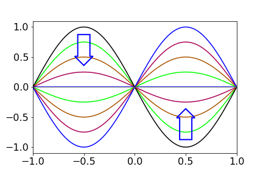
Figure 13a. A standing wave. The amplitude changes in the way indicated by the arrows, then repeats in the opposite sense and so on ad infinitum.
5.5 Superposition of waves of the same frequency¶
A defining characteristic of waves is that they can form superpositions, which is to say that when added or subtracted a new waveform is produced. When the waves are of the same frequency (or wavelength) this leads to interference and diffraction phenomena. When waves of different frequency are added beats are produced as described above. In quantum mechanics wavepackets are formed as superpositions of wavefunctions and are described in Chapter 5, (Summation and Series).
Example from xray diffraction¶
In x-ray diffraction the x-rays are scattered by the atoms that are present in regular and repeated positions in a crystal. The smallest set of repeated positions is called the unit cell. The Bragg equation \(n\lambda = 2d\sin(\theta) \) defines the angle \(\theta\) that the x-rays are diffracted off planes with a separation \(d\). Only some angles cause diffraction because \(n\) is an integer and the values of \(d\) are determined by the limited number spacing between atoms. As the incident and diffracted angle are equal at \(\theta\) the diffracted rays can be considered to be reflected off the lattice planes. Only the diffracted (reflected) waves that interfere constructively with one another to produce light spots on the detector. Diffraction with crystals is described in more detail in Chapter 9, Fourier Transforms.
A general wave of frequency \(\omega\) has the form
where \(\varphi\) is the phase and the expansion formula of \(\cos(x+y)\) was used, see section 5.1. As the phase varies from \(0\to \pi\) the amplitude of the sine and cosine changes from \(1\) to \(-1\). The phase can only be in the range \(0\to 2\pi\) any other values simply return values in this range because of the periodic nature of sines and cosines. In x-ray diffraction the phase is proportional to the perpendicular distance \(x_i\) from the lattice plane to each atom and \(\varphi_i=2\pi x_i/d\)
The sum of waves from the \(N\) atoms in the unit cell is
The number \(N\) will be small for most molecules such as benzene, typically one or two times the number of atoms in the molecule, but is thousands for large proteins. As the x-ray frequency is constant, and does not depend on \(N\) its terms can be removed from the summation,
The sum of several cosines is also a cosine, and similarly for sines, thus it follows that if \(a_s\) and \(\varphi_s\) are the resultant amplitude and phase respectively, that we can write
which means that the amplitude at any point is the sum of that for each wave. The total wave is,
In detecting infra-red, visible light or even x-rays the intensity \(I\) is always measured, because of the nature of the interaction of electromagnetic radiation with the atoms and molecules in the detector. The \(\omega t\) terms cannot be measured as the frequency is far too high, and is averaged in the measuring process and can therefore be absorbed into the amplitude and so ignored. The intensity is the square of the wave’s amplitude \(I=a_s^2\) and adding the squares of \(a_s\cos(\varphi_s)\) and \(a_s\sin(\varphi_s)\) and using \(\cos^2(\varphi_s)+\sin^2(\varphi_s)=1\) we find that \(a^2\) is produced as
with overall phase \(\varphi_s\) given by
A more general derivation of the superposition is given in chapter 9, Fourier Series and Transforms.
To recap, the intensity \(I\) is that due to all atoms in the unit cell in proportion to their phase \(\varphi_i\) and is unique at each possible scattering angle \(\theta\), thus in x-ray diffraction from crystals the positional information is contained in the intensity of the measured spots on the detector not their position.
Example with two waves¶
Suppose that there is a grating with small apertures separated by \(d\) and a second set also with separation \(d\) but displaced by \(\alpha d\) as shown in the figure below. We can consider these apertures as point emitters producing equal amplitude waves of the same frequency and in phase. They could be, for example, atoms scattering x-rays. At a certain angle the waves with spacing \(d\) have phase difference \(2\pi n\), i.e. these waves combine constructively to give a line at order \(n\). The other source has a phase difference relative to the first of \(\varphi = 2\pi\alpha n\). On the detector the total wave intensity is observed at orders \(n=0,\pm 1,\pm 2\cdots\) and the phases are \(\varphi_0 = 0, \varphi_1=2\pi n \alpha\) and from eqn. 16a and assuming the amplitudes are unity for simplicity, the intensity for a wave from each sets is,
If \(\cos(\varphi_1)+1=0\) or \(\cos(2\pi n\alpha)=-1\) then a bright line will be missing at order \(n\) in the diffraction. This will happen when the cosine has a value of \(-1\) or \(2\pi n\alpha = m\pi\), i.e. at all odd integer values \(m=\pm 1,\pm 3\cdots \) of \(\pi\).
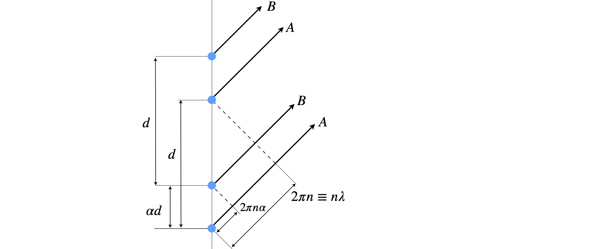
Figure 13b. Two slits (blue dots) each separated by distance \(d\) but one pair is displaced by \(\alpha d\). This displacement causes a phase shift \(\varphi=2\pi n d\) with respect to the other pair for diffracted order \(n\).
5.6 Hyperbolic functions¶
The hyperbolic functions are closely related to the circular functions, sine, cosine, etc. of trigonometry. The equation of a (unit) circle is \(x^2 + y^2 = 1\) and in parametric form \(\cos(\theta) = x,\; \sin(\theta) = y\) and any point has coordinates \((\cos(\theta), \sin(\theta))\) }. The equation for a hyperbola is \(x^2 - y^2 = 1\) or, in parametric form, \(\cosh(t) = x,\; \sinh(t) = y\), but \(t\) is not a measure of angle. The two curves produced are shown in figure 14, and one point plotted on each, at a value of \(\theta\) and \(t =2\pi/3\). The hyperbolic functions are often pronounced, ‘shine’, ‘cosh’ and ‘than’, with emphasis on the ‘th’.
The shape of a freely hanging cable supported at its ends only, follows the equation \(y = \cosh(x)\), and is called a catenary. The arch in St Louis in the United States follows closely that of an inverted cosh. The equations of the hyperbolic functions are similar to those of normal trig functions, but not identical, for example;
These identities can be checked using SymPy, for example
x = symbols('x')
simplify( cosh(x)**2 + sinh(x)**2 )
produces the result \(\cosh(2x)\).
The circular functions sine, cosine, and tangent can be represented as real functions involving complex exponentials, see Chapter 2. The hyperbolic functions \(\sinh(x),\; \cosh(x),\) and \(\tanh(x)\) are also real functions and can also be represented as real exponentials. The hyperbolic functions are
Some values are
The functions are plotted in figure 15 and compared to the normal trig functions.
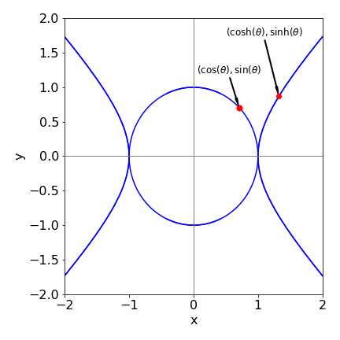
Figure 14. Circle and hyperbola. The point is at \(\theta\) or \(t= \pi/4\).
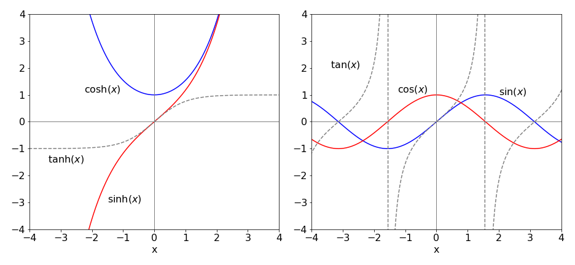
Figure 15. Some of the hyperbolic and normal trigonometric functions. Notice how \(\tan(x)\) goes to \(\pm\infty\) in multiples of \(x = \pm\pi/2\).
6 Inverse functions¶
The log and exponential functions are inverses of one another, and similarly \(x^n\) and \(x^{1/n}\) because when one is made a function of the other, the result is \(x;\; \ln(e^x) = x\) and \((x^{1/n})^n = x\). If the function is written as \(f(x)\) then the inverse is \(f^{-1}(x)\), therefore
However, not all functions have an inverse. When plotted the observation is that one function is the reflection of the other through a straight line of gradient \(\pm 1 \), such as shown in figure 8 for the positive exponential and log. More formally, the function and its inverse must have a one-to-one relationship. If an inverse exists when the function \(f (x)\) is solved for \(x\), then \(x\) and \(y\) exchanged and the result substituted into the original equation, \(x\) results. For example, if \(f(x) \equiv y = (x + 2)/3\) then \(x = 3y - 2\), the inverse function is found by swapping \(y\) for \(x\), giving \(f^{-1}(x) = 3x - 2\), and then substituting back \(f^{-1}[f(x)] = 3(x + 2)/3 - 2 = x\).
The function \(y = \sin(x)\) has \(y = \sin^{-1}(x)\) as its inverse function, which can be written as \(\sin(y) = x\), which is a sine wave moving up the y-axis, as shown in figure 16. Similarly there are inverse functions \(\cos^{-1}(x)\) and \(\tan^{-1}(x)\). Notice that the computer notation is different to the mathematical one; for example, \(\sin^{-1}(x) \equiv \arcsin(x)\), the prefix ‘arc’ being added to these inverse functions, but this notation is not universal and in some languages asin may be used instead of arcsin etc.
The inverse trig functions are multi-valued; the principal range for \(\sin^{-1}(x)\) and \(\cos^{-1}(x)\) is \(x = \pm 1\) and the function’s principal values lie between \(y = \pm \pi/2\). The inverse function \(\tan^{-1}(x)\) is also multi-valued and ranges from \(x = \pm \infty\) and has principal values between \(y = \pm\pi/4\).
The equations defining inverse trig and hyperbolic functions are shown below, and some of which were obtained using Sympy for example,
x = symbols('x')
asinh(x).rewrite('log')
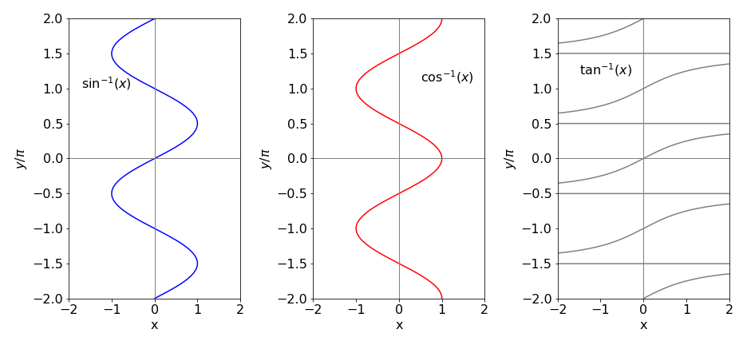
Figure 16. Inverse trig functions with \(y\) limited to the range \(\pm 2 \pi\). The \(\tan^{-1}\) functions extend to \(x = \pm\infty\) with a limit of integer multiples of \(y = \pm \pi/2\).
7 Cartesian and polar coordinates¶
When drawing a graph a right-angled set of axes is normally used. The origin is the point (0, 0) and then any other point is represented by two numbers \((x,\; y)\) in the x-y plane. In three dimensions the coordinates are \((x,\; y,\; z)\). These coordinates are described as rectilinear when right-angled axes are used and as Cartesian when \((x,\; y,\; z)\) are used.
There are other ways of defining a point in space and some of them will be used when the situation requires it. In crystallography, for example, it is often sensible to define axes of particular crystal types that are not always at 90\(^\text{o}\) to one another and of unequal length. Monoclinic and trigonal crystal types, among others, have these ‘sloping’ axes. On the surface of a sphere, such as the earth, there are no straight lines, and latitude and longitude, which are angles, are used to define a location. In other situations, for example defining the three-dimensional shapes of atomic orbitals, spherical polar coordinates are used and in these coordinates, two angles and a radius define a point. These coordinates are used because they reflect the underlying symmetry of the problem and equations become easier to solve. In the hydrogen molecule, prolate spheroidal coordinates are used. These have two origins, one at each atom, see Figure 30 for a sketch of coordinates. In other situations, cylindrical coordinates are used. There are many other coordinate systems, see Arkfen (1970) for a description.
The reason for using different coordinate systems is not to make life difficult, far from it, but is that calculations are often easier done in these coordinates than in Cartesians; the disadvantage of these other coordinate systems is only unfamiliarity. In each case, it is possible to convert from one coordinate ‘system’ to another. In spherical polar coordinates the radius \(r\) is the distance of a point from the origin, \(\theta\) is the polar angle measured from the z-axis and \(\phi\) the azimuthal or equatorial angle measured in the x-y plane from the x- to the y-axis. The conversion between Cartesian and spherical polar coordinates is
The azimuthal angle \(\phi\) is in the x- y plane and measures the angle from the x-axis to the line formed by the projection of the point onto this plane, and has a maximum of 360\(^\text{o}\). \(\theta\) is the polar angle measured from 0 to 180\(^\text{o}\) from the z-axis.
In two dimensions, plane polar coordinates are used to define a point in the x-y plane. If z is included then these coordinates become the cylindrical coordinates. The relationship of plane polar to Cartesian coordinates is
The angle \(\theta\) is measured from the x- to the y-axis, figure 18
Figure 17. Spherical polar coordinates. The point at \((x,\; y,\; z)\) in Cartesian coordinates is at \((r,\; \theta, \; \phi)\) in spherical polar coordinates.
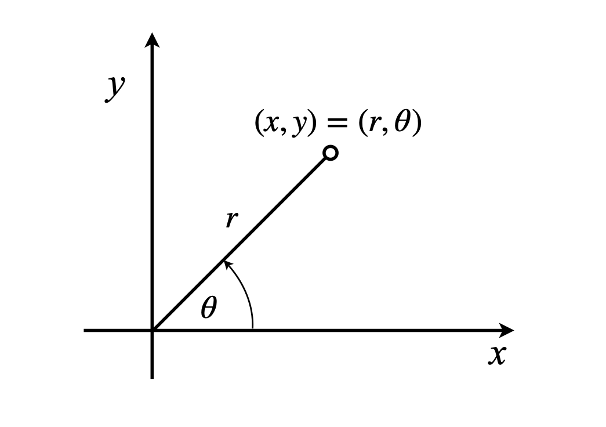
Figure 18. Plane polar coordinates.
8 Factorials¶
The factorial function is the product of a set of positive integers from 1 up to n;
with the limits that
The factorials can also be calculated recursively as
In Figure 19 notice how rapidly the factorials increase as \(n\) increases. The plot is of \(\ln(n!)\) vs \(n\), which shows that \(n!\) increases more rapidly than does \(e^{n}\), which would be a line of slope 1 on this graph.
Fractional, negative, and complex factorials are defined by the (complete) gamma function \(\Gamma(n)\). Positive integer values of this function produce the factorials, and are related as
The gamma function is the integral
which is defined in Python using a special function and imported as \(\mathtt{from\,scipy.special \,import \,gamma}\). This can then be used to calculate any factorials such as shown in the figure.
Occasionally you may come across double factorials defined as
if \(n\) is a positive odd integer and
if \(n\) is a positive even integer and \(n!! = 1\) if \(n\) is \(-1\) or \(0\).
A ratio of factorials arises from the series
is sometimes given the symbol \((x)_n\) which is called the Pochhammer symbol, although this notation is not universal. Ratios of factorials similar to these occur in quantum mechanics, particularly when angular momentum quantum numbers are involved.
Stirling’s formula¶
The log of the factorial is often used as a way of calculating factorials and Stirling’s formula
is particularly useful for large \(n\). For smaller values we can use the equivalent formula \(\displaystyle n!=n^ne^{-n}\).
The approximations is calculated as
A much more accurate approximation is
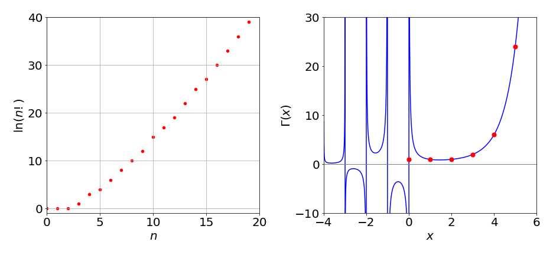
Figure 19. Left: \(\ln(n!)\) vs \(n\). The curve is not smooth because the factorials are integer numbers. Right: The gamma function (solid line) and the factorial (circles).
8.1 Recursion. Calculating Factorials and Orthogonal Polynomials.¶
Recursion is a general method by which certain functions, such as a factorial or a polynomial, can be calculated by starting with one or two values and using these as a seed to generate further values. The recursion equations are sometimes also called difference equations.
The algorithms to calculate the square root, \(e\), and \(\pi\) are each recursive because a previous result is used to calculate the next one. The factorial is the product of numbers separated by unit values, so starting with one value and an increment, all the rest can be calculated up to a given number. The equation is
An algorithm to calculate factorials up to a value of \(n\), is
#### Algorithm. Direct calculation of a factorial
#-----------------
def fact(n):
if n <= 1 :
return 1
f = 1
for i in range(1,n+1):
f = f*i
return f
#-----------------
print(fact(15))
1307674368000
returns \(1307674368000\). In fact the Python language allows the function \(\mathtt{fact(n)}\) itself to be recursive as shown in the next algorithm. It is perhaps more intuitive since the factorial can be defined as \((n + 1 )! = (n + 1)n!\) or as \(n! = n(n-1)!\) which is the form used in the next algorithm.
#### Algorithm. Recursive function calculation of factorial
#---------------------
def fact(n):
if n <= 1 :
return 1
return n*fact(n-1)
#---------------------
print(fact(15))
1307674368000
The polynomials used to define wavefunctions in quantum mechanics can be calculated by recursion and while there are other ways of calculating them, such as the generating function method, see Chapter 9, recursion is often convenient. The Hermite polynomials \(H_n(x)\) describe part of the wavefunctions of the Quantum Harmonic Oscillator, as used to describe vibrations of a molecule, and the other parts multiply the Hermite by a normalization constant and by \(e^{-x^2/2}\). In the Hermite polynomial, \(n\) is an integer \(n \ge 0\) representing the quantum number, and \(x\) is proportional to the displacement of the oscillator from equilibrium. The wavefunction’s equation is
where \(m\) is the mass and \(\omega=2\pi v\) the frequency.
One recursion formula for the Hermite when \(n \ge 1\) is
The next value with \(n = 1\), is
All other values can be obtained in a similar way using the recursion formula given above. Using Sympy this can be automated
#### Algorithm. Hermite Polynomial Recursion. (This is slow for large n )
x, n = symbols('x, n') # define n and x in SymPy
#----------------------
def herm(n, x): # define recursion equations returns the nth hermite with argument x
if n == 0:
return 1
elif n == 1:
return 2*x
else:
return (2*x*herm(n - 1, x)) - 2*(n- 1)*herm(n - 2, x)
#----------------------
expand(herm(10,x)) # return 10th Hermite as polynomial